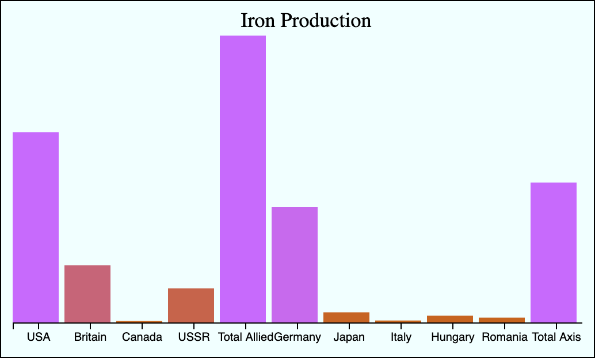

The topic of effective warfare is a very controversial and period based topic. There are many factors to war that cannot be easily represented by data such as strategy, landscape, and technological advantages. We will be taking some major factors of war and looking for any major factor that seemed to play a larger role than others during WW2.
As an example of production value during WW2 we are using total aircraft production over the course of the war. As we can see from the data the allies have over 2x more planes than the axis. You may interpret this by then saying that its obvious that the allies won the war because of this advantage in production capability. A flaw with this data is the lack of capability to show the technological advantage the axis had over the allies especially during the beginning of the war
This graph shows the military expenditures by each major country per year from 1938-1945. We can see the preperations of the axis prior to and during the initial phases of the war that could have given them a strategic and material advantage over the allies. We also see the increasing expenditure by the United States that far outstretched what the axis was capable of matching. This is one of my favorite graphs as in my opinion it shows why the axis aimed for blitzkreig or lightnight warfare tactics as they knew the allies could outproduce them in the long run.
The reason I chose coal production here is because it is a fuel, and I can make a comparison between two axis powers. Most of the german war industry ran off of coal, but while they did not has as much coal as the allies they also had enough that they were never in shortage. Japan on the otherhand was very resource deprived, which was the initial reasoning behind their war on china. Toward the end of the war we see Japan restricting their strategy based upon lack of fuel, which led to a faster downfall. The point of this chart being that although some data may look bad, it could also have had very little effect on the overall war.
 Iron production is another set of data that shows the allies having an overwhelming advantage, but a larger base of knowledge is required make an assumption based upon this data. Prior to the war Germany imported over 22 tons of iron, a majority of which from Sweden,and stockpiling to prepare for the increased demand their wartime economy would require. This is why even though this chart if very similiar to the coal chart any material deficiency took effect much later in the war.